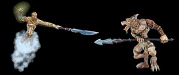
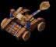
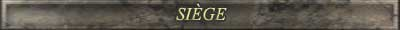

| |
Les combats sont l'occasion pour une seigneurie d'augmenter ses acres. C'est l'une des actions les plus difficiles à réaliser dans le monde de HainyaH car une attaque mal planifiée peut mettre en péril l'équilibre de votre seigneurie et même provoquer sont
effondrement total. Vous avez la possibilité d'effectuer un maximum de 3 attaques simultanément. Il est donc important de bien gérer les ratios d'unités militaires que vous utiliser pour chacune des attaques.Voici les principes généraux et les conseils pratiques à tenir compte avant de se lancer dans une aventure guerrière. La réussite d'une attaque dépend du rapport de force déployé par le seigneur attaquant par rapport à la défense de l'ennemi.
De manière très sommaire, ce calcul dépend du nombre et de la force offensive des troupes envoyées à la bataille par rapport au nombre et la force défensive des troupes de la seigneurie visée. Pour mieux comprendre, regardons cet exemple.
Un seigneur orc envoie 250 trolls (unité d'élite des orcs) qui possèdent une force offensive de 8 points et aussi 200 guerriers qui possèdent une force offensive de 4 points. Un seigneur humain est visé par cette attaque, il a sa disposition 400 paladins(unité d'élite humaine) qui possèdent une force défensive de 5 points et 300 sentinelles qui possèdent une force défensive de 4 points. Pour voir la force des différentes unités, voir le guide Unités militaires.
Donc voici le calcul
Pour l'orc ( 250 * 8 ) + ( 200 * 4 ) = 2800 points de force offensive Pour l'humain ( 400 * 5) +( 300 * 4 ) = 3200 points de force défensive
Dans cette situation très simple, l'orc serait repoussé par le seigneur humain et ne gagnerait aucun acre durant cette bataille. En plus, les troupes envoyées dans la bataille ne sont plus disponibles pour défendre ses propres terres et il serait plus vulnérable à une contre-attaque par un seigneur ennemi. Cette situation très simple ne se produit pas dans Hainyah, car il a de nombreux facteurs additionnels qui influencent l'issue d'une bataille. C'est ce qui fait de la guerre un art si dur à maîtriser et qui demande de l'expérience.
Voici les différents facteurs qui influencent une bataille.
| -Les chevaux permettent d'augmenter
la force offensive des unités 1 point. |
|
| - Les bonus de royaume peuvent influencer l'attaque ou la défense | |
| -Un château procure 500
points de force défensive. |
|
| -Les sorts de protection donnent
un % de défense supplémentaire qui est ajouté à
la force défensive. |
|
| -Des sorts spéciaux augmentent
la force d'une unité précise(voir
guide magie) |
|
| -Les conseillers peuvent augmenter en % la force offensive ou défensive déployée par une seigneurie | |
| -Des races bénéficient de caractéristiques particulières les aidant durant les batailles (voir guide race) | |
| -La science permet d'augmenter le déploiement de force offensive de l'attaquant (voir guide science) | |
 |
-Une attaque de siège est différente sur plusieurs points d'une attaque traditionnelle (voir plus bas) -Une attaque mage-voleur est différente sur plusieurs points d'une attaque traditionnelle (voir plus bas) |
| -Le général offensif et le général défensif aident durant un combat. Chaque point d'expérience d'un général offensif procure un point de force supplémentaire lors d'une attaque et chaque point d'expérience du général défensif procure un point de force supplémentaire lorsque l'on subit une attaque ennemie. Pour le général offensif, un maximum de 10 points par acre est calculé. | |
| -Les dieux s'impliquent en envoyant des archanges dans une bataille jugée inégale. | |
| -S'ajoute à ces facteurs, un pourcentage de chance qui peut influencer sur l'issue d'une bataille |
| -Il est important
de lire le rapport de vos généraux avant de passer à
l'attaque |
| -Une attaque qui
ne bénéficie pas de l'approbation des Dieux est plus risquée
car les Dieux apportent leurs appuient à la seigneurie qui fait
l'objet d'une attaque déloyale. Tout dépendant du rapport
de force (en acre), les Dieux quand ils sont en désaccord avec
une attaque vont envoyer un bataillon d'archanges pour aider la seigneurie
en danger. Ce bataillon peut s'estimer en unité par la différence
d'acre entre l'attaquant et la seigneurie attaquée. Si l'attaque
est vraiment impardonnable, des archanges d'élite ayant une force
défensive de 50 points se joindront à l'armée du
défendeur. Si l'offense est mineure,des archanges de la garde régulière
ayant une force défensive de 10 ou 25 points viendront appuyer
le seigneur oppressé. |
| -Il est imporant
d'utiliser les boules de cristal du magicien(ne) et les informations militaires
des voleurs pour estimer la force défensive de l'adversaire. |
| -Les informations
militaires obtenues par les voleurs appartenant à la guilde du
vol ne sont pas précises. |
| -Une seigneurie qui a subi d'autres attaques récemment reçoit aussi une aide des dieux. Plus une seigneurie a subi des attaques plus les dieux l'aideront. |
| -Il est important de ne jamais envoyer plus de 50 % de notre force défensive dans une bataille car les risques de contre-attaque sont très élevés. |
| -Le fait d'envoyer une force offensive dérisoire face à la force défensive de l'ennemi, c'est-à-dire moins de 50% aura pour résultat un véritable massacre. Non seulement, vous ne gagnerez pas d'acre, mais très peu de vos troupes reviendront de cette périlleuse aventure tandis que l'ennemi de subira aucune perte dans ses rangs. |
| -Si une attaque est réussie, les pertes militaires de l'attaquant sont moins élevées que le défenseur et vice versa. |
| -Des unités sont plus résistantes que d'autres, en général les élites auront moins de pertes au combat que les guerriers et les sentinelles. Les archers sont très résistants lorsque l'attaque échoue, mais se font massacrer si l'attaquant brise vos défenses, et ce, surtout en attaque de siège. |
| -Une attaque ne peut pas prendre moins de 10 jours hainyen. |
| -Le sort du cercle de l'eau Brume fait en sorte d'augmenter le temps de retour d'attaque si la seigneurie visée est protégée par cet effet magique. |
| -Attention, il est impossible d'attaquer quand l'utilisation (voir détail de l'économie) de notre seigneurie est en dessous de 50%. |
| -Le fait d'attaquer une seigneurie plus petite que la votre de 20% commencera à diminuer vos gains. Plus la seigneuries est petite par rapport à la votre plus petits seront vos gains. |
|
||
|
|
Ce style d'attaque qui est le plus courant et
le plus classique se déroule en une seule opération. C'est
l'attaque à choisir pour affaiblir un ennemi sans trop vous exposer
aux contre-attaques. Les risques sont moins élevés et les
pertes militaires aussi. Avec ce type d'attaque vous n'êtes pas obligé
d'être en guerre. Il est aussi possible avec ce type d'attaque de
traquer les voleurs de l'ennemi pour affaiblir sa puissance au niveau du
vol. Lorsque cette option est choisie, les voleurs ennemis procurent une
force défensive de 2 points par voleur. C'est
aussi la seule attaque qui sera compté pour les conflit de pouvoir
entre clan. |
|
 |
||
| |
Ce type d'attaque utilise vos armes de siege et peut se faire en guerre uniquement, les armes de siège que vous disposez tentent d'affaiblir l'ennemi avant l'attaque finale. Les trébuchets vont détruire les murs tandis que les onagres vont tuer les unités militaires de l'ennemi. Le tour de guet permettent de limiter les dégats causées par les armes de sieges en prévoyant les manoeuvres de l'ennemi. Après ce premier assaut, la forteresse de l'ennemie est chargée et si vous percez ses défenses les gains en acres seront plus importants. Chaque attaque de siège provoquera des pertes en onagres et en trébuchets et nn échec lors de l'assaut final provoquera des pertes militaires très élevées dans vos rangs. Noter que les archers du défenseur offrent 5 points de défense au lieu de 3 points lors ce style d'attaque et que 2 paysans ou mendiants procurent un points de défense. |
|
|
||
| |
Ce style d'attaque implique votre mage ainsi
que vos voleurs et peut se faire en guerre uniquement. Si vous utilisez
ce style d'attaque, votre mage ne pourra plus être utilisé durant la durée
de l'assaut. Il permet quand même de résister aux sort ennemis à sa clairvoyance
qui protège votre seigneurie a distance mais ne lui permet pas de lancer
de nouveau sort. Le mage est impliqué dans le combat de deux façon, son
expérience en magie procure un force d'attaque (en %) supplémentaire lors
de l'assaut. Le magicien ennemi procure lui aussi une défense (en %) de
son coté. De plus, le mage utilisera un des trois sorts (voir les sorts
plus bas) durant le combat dans l'espoir d'influencer un facteur de la bataille.
Le mage ennemi en fait autant de son côté. Les voleurs sont impliqués dans
l'assaut en procurant 3 points d'attaque et 2 points en défense. Il ne seront
plus disponible pour les vols durant la durée du combat. Les gains en acres
dans le cas de la réussite de cette attaque sont importants quoique moins
grands que lors d'une attaque de siège. Il est aussi bon de noter que des
quelques acres sont complètement détruites et ne pourront augmenter votre
territoire.
En attaque - Le sort le marteau de HAI permet d'augmenter votre
force d'attaque. En defense - Le sort le vortex mystique de YAH
permet d'augmenter votre force de défense. |
|
|
||
|
|
Ce style d'attaque est dirigé par les voleurs. C'est une attaque éclair dont l'objectif est de d'affaiblir l'ennemi en lui volant ses ressources, en déconcentrant son mage et en éliminant ses unités militaires. Les gains en acres sont très faible. Ce type d'attaque n'est pas disponible en période de paix. Caractéristiques: -Chaque voleur dirige un groupe maximale 4 autres unités(exceptions
des chevaux) |
|
|
||
|
|
Ce style d'attaque est à éviter le plus
possible car il est la démonstration de conflits internes dans
un royaume. Ce type d'attaque n'est utile que pour régler des conflits
internes par la force dans l'espoir de ramener l'harmonie dans un royaume.
Il ne procure aucun gain d'acres mais provoque des pertes militaires.
|
|